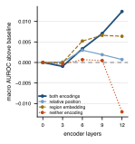
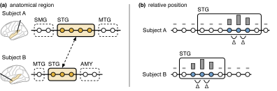
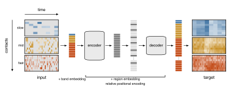

Simple methods trained on large amounts of data have produced powerful general models in language, audio, and vision. We hope the same can be done for the brain.
We introduce MAPA, a masked autoencoder for intracranial neural data. It learns directly from unlabeled recordings, producing neural representations that generalize across subjects.
Pretraining reduces labeled-data requirements
Across subjects, MAPA needs ~164 labeled trials to reach the accuracy that takes 3,500 trials without pretraining.
MAPA’s encoder is pretrained and then frozen for all evaluations. MAPA and the frontend baseline share their frontend and readout, so the gain comes from the pretrained encoder alone.


Each regime uses its own y-axis range.
MAPA sets a new state of the art
MAPA sets a new state of the art across all three regimes of the Neuroprobe benchmark without fine-tuning: within-session, cross-session, and cross-subject.
Fit the readout on one subject. Test on other subjects.


Zero marks the frontend baseline. All three regimes use the same y-axis scale; unavailable results are omitted. Lap+STFT denotes Laplacian re-referencing followed by a spectrogram.
Neuroprobe leaderboard. Macro AUROC over 15 tasks. Only the best entry of each published method family is shown.
Generalization to held-out subjects
The strictest test of cross-subject transfer fits the readout on an anchor subject and evaluates on subjects held out from pretraining. A gain requires learning neural representations that generalize across subjects.
In the cross-subject regime, MAPA improves macro AUROC over the frontend baseline on all held-out subjects.
{kind=link}

Spatial encodings for cross-subject transfer
MAPA encodes each contact’s brain region and the relative positions of contacts along an array, giving the model spatial information shared across subjects.
{kind=link}

MAPA architecture
MAPA is an extension of Masked Autoencoders (MAE) to intracranial neural recordings. The encoder, decoder, and objective follow the standard MAE design. We change only the patching and the two spatial encodings to fit iEEG data.
{kind=link}

Conclusion
Now is the time to scale. Intracranial recordings are accumulating en masse across institutions and experimental paradigms, and we can bring them together to train powerful general models for the brain.
And perhaps, a model trained on thousands of brains could not only bring us extraordinary neural interfaces but also tell us something about what it means to be human.
Citation
@misc{tang2026pretraining,
title = {Pretraining for Sample-Efficient Neural Interfaces},
author = {Tang, Ben and Spalding, Zachary and Cogan, Gregory B.},
year = {2026}
}Acknowledgments and Disclosure of Funding
This work used the Delta and DeltaAI systems at the National Center for Supercomputing Applications through allocation CIS261108 from the Advanced Cyberinfrastructure Coordination Ecosystem: Services & Support (ACCESS) program, which is supported by U.S. National Science Foundation grants #2138259, #2138286, #2138307, #2137603, and #2138296. This research used both the DeltaAI advanced computing and data resource, which is supported by the National Science Foundation (award OAC 2320345) and the State of Illinois, and the Delta advanced computing and data resource, which is supported by the National Science Foundation (award OAC 2005572) and the State of Illinois. Delta and DeltaAI are joint efforts of the University of Illinois Urbana-Champaign and its National Center for Supercomputing Applications. Z.S. and G.B.C. were supported by NIH R01DC019498. G.B.C. was supported by NIH R01NS129703.
We thank Geeling Chau, Christopher Wang, Shivashriganesh P. Mahato, Saba Hashemi, and Andrii Zahorodnii for helpful discussions.